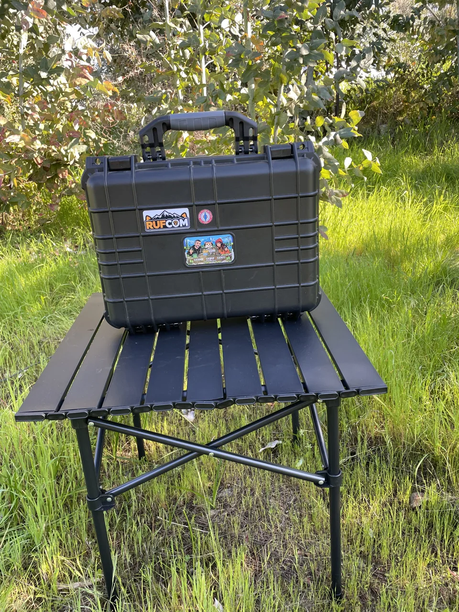
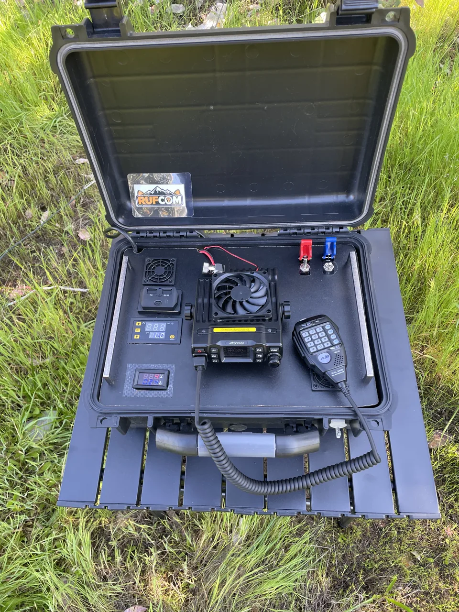
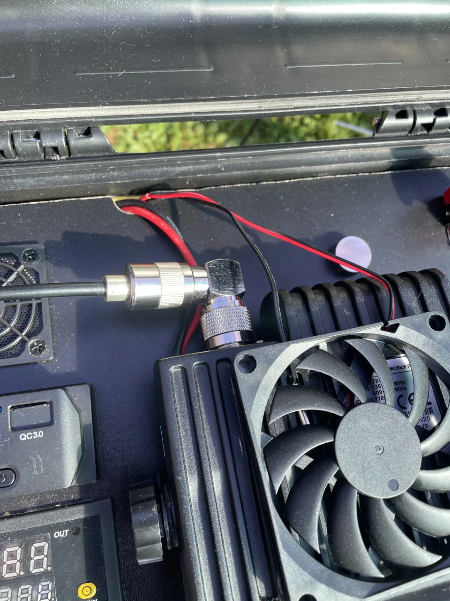
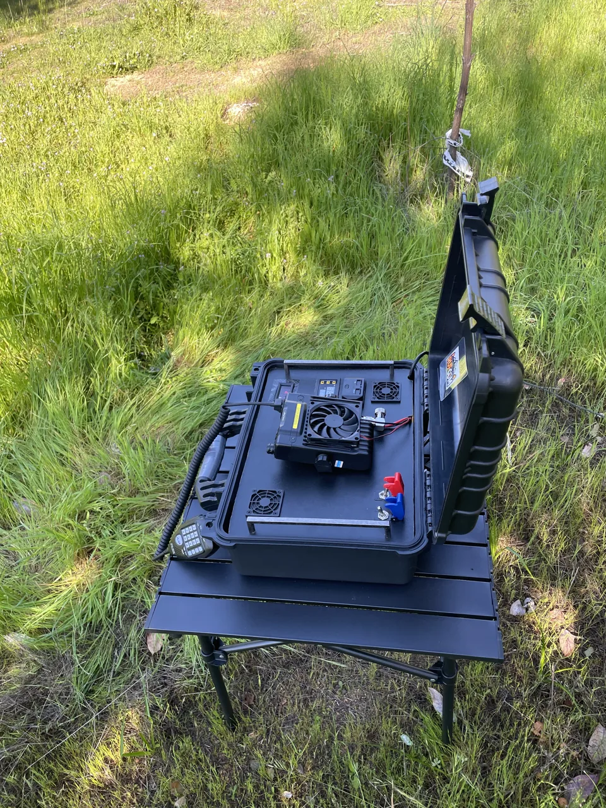

No queríamos simplemente guardar una radio en una caja. Queríamos una estación que tuviera energía, respaldo, medición y conexiones organizadas en un solo lugar.

Un espacio que vuelve a ser tuyo
Tu casa no necesita una habitación de radio.
En un departamento pequeño, la mesa puede tener muchos usos. La idea es instalar la estación cuando quieras comunicar y guardarla cuando necesites recuperar ese espacio.
La maleta reúne el equipo y sus conexiones. Para operar, ábrela, prepara la alimentación y conecta una antena externa adecuada.
¿Qué lleva?

Radio móvil
El corazón de la estación. Un equipo pensado para trabajar con una antena externa y alimentación estable.
Fuente de alimentación
Permite alimentar la estación desde la red eléctrica de casa o de un lugar con enchufe disponible.
Batería de respaldo
La maleta incorpora una batería para usar la estación cuando no tienes un enchufe cerca.
Voltaje y corriente
Indicadores que permiten revisar rápidamente el estado eléctrico y el consumo de la estación.
Interruptores y protección
Ordenan el encendido y ayudan a proteger la instalación. Los fusibles adecuados son parte importante del montaje.
Conexión de antena
La salida hacia una antena externa permite adaptar la estación al lugar: casa, balcón, vehículo o terreno.
Lo que reúne la maleta
Componentes principales
Base73 MK1 reúne los elementos esenciales para una estación de comunicaciones transportable.
01 · Estructura
Maleta de transporte
02 · Comunicación
Equipo de radio
03 · Alimentación
Fuente de poder
04 · Respaldo
Batería de respaldo
05 · Ventilación
Sistema de ventilación
06 · Indicadores
Indicadores de voltaje y corriente
07 · Accesorios
Conexiones y accesorios
08 · Protección
Sistema de control y protección

Las piezas en uso
Conexiones pensadas para el espacio disponible.
El conector en ángulo ayuda a orientar el cable dentro de la maleta. Es una de esas piezas pequeñas que facilitan organizar el montaje.
Conoce los adaptadoresBuscamos aligerar el conjunto para que sea más cómodo trasladarlo.
¿Qué buscamos con este proyecto?
Todo ordenado
Los componentes tienen un lugar definido y las conexiones quedan protegidas.
Proteger el equipo
La maleta hermética ayuda a resguardar la estación durante transporte y almacenamiento.
Poder trasladarla
La estación puede acompañar una salida, una prueba en terreno o servir como respaldo de comunicaciones.
Base73 MK1: construir, aprender y salir al aire
Base73 MK1 reúne comunicación, energía y respaldo en una maleta transportable. La idea es tener lo necesario, bien instalado y listo para usar.
Una invitación a conversar en directo
También queremos usar Base73 MK1 para fomentar los contactos en simplex: conversar de una estación a otra, sin pasar por un repetidor. Es una forma de conocer tu equipo, probar antenas y descubrir qué cambia al elegir otro lugar para transmitir.
Los repetidores nos ayudan a comunicarnos, pero su cobertura no representa el alcance directo de nuestra radio. En simplex influyen el terreno, la ubicación y altura de las antenas, la frecuencia y las condiciones de ambas estaciones, además de la potencia. Cada prueba es una oportunidad para aprender.
Si estás empezando, visita nuestra guía para obtener tu licencia de radioaficionado. Después, anímate a coordinar un contacto y probar tu estación; no necesitas construir una maleta como esta para empezar.
Una estación que se adapta a tu espacio
En casa o al aire libre: radioafición práctica, experimentación y aventura, sin depender de un escritorio permanente.

De casa a tu próxima salida.
Lo que aprendes usando tu estación en casa también te acompaña a terreno. El lugar cambia; tu equipo sigue reunido en la misma maleta.
Dale forma a tu proyecto
Tu imaginación es el límite
Esta maleta puede ser el punto de partida para tu propia idea. Elige las funciones que necesitas y dale tu estilo.
¿Tienes dudas o un proyecto en mente? Escríbenos y te asesoramos para darle forma.
contactorufcom@gmail.com